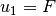
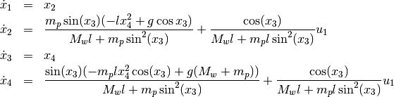
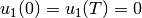
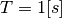
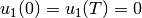
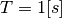

Translation of the inverted pendulum¶
An example often used in literature is the inverted pendulum. Here a
force  acts on a cart with mass
acts on a cart with mass  . In addition the
cart is connected by a massless rod with a pendulum mass
. In addition the
cart is connected by a massless rod with a pendulum mass  .
The mass of the pendulum is concentrated in
.
The mass of the pendulum is concentrated in  and that of the
cart in
and that of the
cart in  . The state vector of the system can be specified
using the carts position
. The state vector of the system can be specified
using the carts position  and the pendulum deflection
and the pendulum deflection
 and their derivatives.
and their derivatives.

With the Lagrangian Formalism the model has the following state
representation where  and
![x = [x_1, x_2, x_3, x_4] = [x_w, \dot{x}_w, \varphi, \dot{\varphi}]](../../_images/math/71f6bb0fe3835795a48a76ce4e2f4950a69451d8.png)

A possibly wanted trajectory is the translation of the cart along the
x-axis (i.e. by  ). In the beginning and end of the process
the cart and pendulum should remain at rest and the pendulum should be
aligned vertically upwards (
). In the beginning and end of the process
the cart and pendulum should remain at rest and the pendulum should be
aligned vertically upwards ( ). As a further condition
). As a further condition
 should start and end steadily in the rest position
().
The operating time here is .
should start and end steadily in the rest position
().
The operating time here is .
Source Code¶
# translation of the inverted pendulum
# import trajectory class and necessary dependencies
from pytrajectory import Trajectory
from sympy import sin, cos
import numpy as np
# define the function that returns the vectorfield
def f(x,u):
x1, x2, x3, x4 = x # system state variables
u1, = u # input variable
l = 0.5 # length of the pendulum rod
g = 9.81 # gravitational acceleration
M = 1.0 # mass of the cart
m = 0.1 # mass of the pendulum
s = sin(x3)
c = cos(x3)
ff = np.array([ x2,
m*s*(-l*x4**2+g*c)/(M+m*s**2)+1/(M+m*s**2)*u1,
x4,
s*(-m*l*x4**2*c+g*(M+m))/(M*l+m*l*s**2)+c/(M*l+l*m*s**2)*u1
])
return ff
# boundary values at the start (a = 0.0 [s])
xa = [ 0.0,
0.0,
0.0,
0.0]
# boundary values at the end (b = 1.0 [s])
xb = [ 1.0,
0.0,
0.0,
0.0]
# create trajectory object
T = Trajectory(f, a=0.0, b=2.0, xa=xa, xb=xb)
# change method parameter to increase performance
T.setParam('use_chains', False)
# run iteration
T.startIteration()